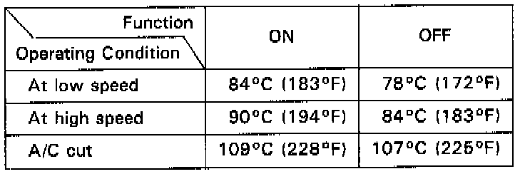

Condenser Fan: Description and Operation

FAN CONTROL SYSTEM:
The fan control unit controls the operation of the radiator fan and condenser fan.
It uses inputs from the coolant temperature sensor and A/C pressure switch (A and B) on the A/C system to determine when the fans should run and at what speed.
Additionally the temperature switch shuts down the A/C system if the coolant temperature exceeds 109°C (228°F).
If the pressure in the A/C system is higher than normal, pressure switch A closes and the fans run at high speed only.
FAN TIMER SYSTEM:
When the engine oil temperature is above approx. 92°C (198°F) after the engine is stopped, the radiator fan and condenser fan goes on to cool the engine for a maximum of 15 minutes.
When the temperature falls below approx. 77°C (171 °F), the fan stops.
The fan motor runs at low speed to decrease operating noise.
The oil temperature switch is located on the right valve cover, and the fan timer unit is located on the right kick panel.